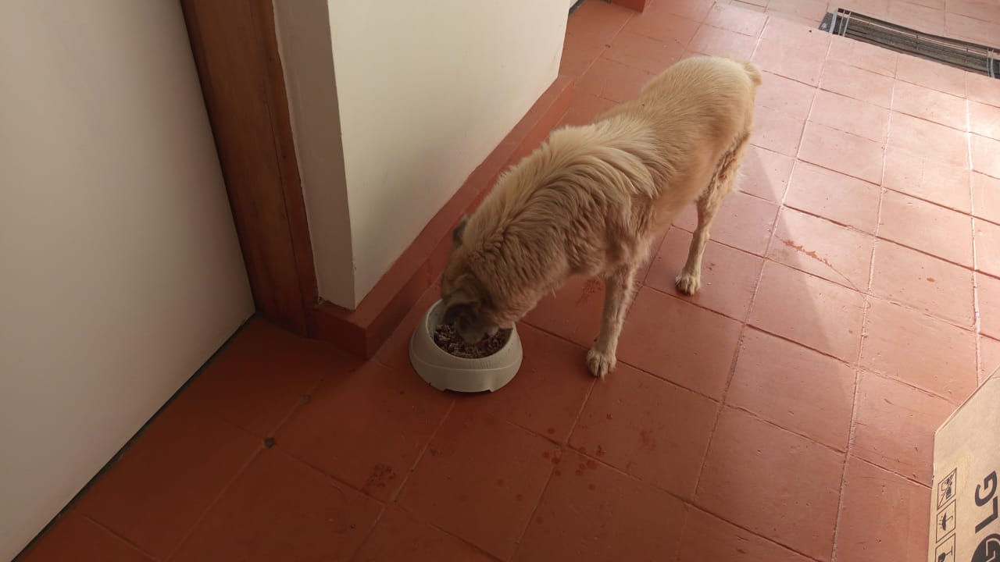

Mucheru World of Golf
Field operations at Mucheru World of Golf on Tuesday, 22nd September 2026 focused on sand spreading across putting greens, machine earthworks for teebox reshaping and boundary shaping, dam drainage trenching, and boundary tree planting:
- Riversand Spreading on Greens 3, 4, and 9: Manual crews used shovels and wheelbarrows to move and apply clean riversand over the compacted volcanic pumice sub-bases. Green 3 received complete surface coverage, Green 4's contoured bean-shaped complex was fully blanketed with sand mounds ready for screeding, and Green 9 received initial partial sand coverage along its upper sub-base.
- Teebox 5 Reshaping: The XGMA Backhoe Loader was deployed to Teebox 5 to reshape the elevated launch platform. The machine cut, graded, and leveled the earthen platform to achieve proper elevation and alignment with the fairway playing corridor.
- Boundary Berm Between Green 14 and Green 16: To clearly separate adjacent holes, the Backhoe Loader pushed and sculpted a defined earthen boundary berm between Green 14 and Green 16, establishing clear playing lines.
- Dam 2 Trenching & Green Overflow Drainage: Excavation crews dug trenches around the Dam 2 perimeter embankment. Additionally, long overflow drainage trenches were excavated across the terrain to direct water runoff from the greens straight into the Dam 2 catchment basin.
- Palm Tree Planting up to Green 5: Agronomy supervisor Peter Githinji was supported by a dedicated women's crew to plant palm trees along the boundary fence road. Chaka farm crew members filled the planting holes with a nutrient-rich mixture of red soil, charcoal dust, and manure. A circular drip ring irrigation setup with individual control valves was installed around each tree base to ensure regular watering. Planting reached up to Green 5 by end of day.
- Farm Tractor Haulage Logistics: The farm tractor and trailer performed vital transport duties, hauling red soil to the tree planting holes, ferrying palm trees to their respective planting spots, and carrying excavated soil from the drainage trenches to designated disposal zones.
Drainage Infrastructure Note
The overflow drainage trenches excavated today are engineered to collect and channel surplus surface runoff from the greens directly into Dam 2, protecting the playing surfaces from waterlogging while maximizing water capture into the storage reservoir.
Summary of heavy machinery and tractor hours logged at Mucheru World of Golf on Tuesday, 22nd September 2026:
| Equipment Description | Operator / Assignment | Operating Hours | Hourly Rate (KES) | Total Cost (KES) |
|---|---|---|---|---|
| Backhoe Loader (XGMA) Single machine unit (Front Loader / Backhoe) |
Reshaping Teebox 5 platform, building boundary berm between Greens 14 and 16, trenching Dam 2 perimeter and greens overflow drainage line | 6.00 hrs | 6,500.00 | 39,000.00 |
| Farm Tractor & Trailer | Transporting palm trees, moving red soil to planting holes, and hauling excavated trench spoil to designated positions | Operational Support | Farm Asset | — |
| Total Machinery Expenditure | 6.00 hrs | — | KES 39,000.00 | |
Aerial and ground field video footage capturing sand spreading on Greens 3, 4, and 9, Backhoe Loader reshaping Teebox 5, Dam 2 perimeter trenching, overflow drainage excavation, and palm tree planting along the boundary road.
Comprehensive 18-hole putting green status ledger tracking foundation bases, pumice compaction, riversand spreading, contouring, and drainage connections. Highlighting incremental updates on September 22, 2026:
| Green | Current Technical & Agronomic State | Milestone Status |
|---|---|---|
| Green 1 | Volcanic pumice stone sub-base mechanically compacted with vibratory roller compactor (Sep 19); red loam spread; pumice aggregate leveled; subgrade drainage trenched (Sep 15). | Pumice Compacted |
| Green 2 | Volcanic pumice stone sub-base mechanically compacted with vibratory roller compactor (Sep 19); red loam spread; pumice aggregate leveled; subgrade drainage trenched (Sep 15). | Pumice Compacted |
| Green 3 Today | Clean riversand hauled and actively applied across green foundation surface ready for leveling (Sep 22); volcanic pumice stone sub-base compacted (Sep 19); subgrade drainage trenched. | Riversand Applied |
| Green 4 Today | Clean riversand hauled and spread across contoured bean-shaped complex (Sep 22); volcanic pumice sub-base compacted (Sep 19); architectural shaping complete; drainage trenched. | Riversand Applied |
| Green 5 | Subgrade drainage trenching line now fully connected into Dam 2 outfall (Sep 21); ready; fully established mature championship putting green turfgrass under active sprinkler irrigation. | Turf Ready • Drainage Tied |
| Green 6 | Raised soil barrier berm pushed further back from green apron along perimeter (Sep 21); elevated soil border berm shaped between Green 6 and Green 15; subgrade drainage cut. | Apron Barrier Adjusted |
| Green 7 | Hardcore rocks and ballast stone hauled via farm tractor trailer; manual placing and hand-packing of hardcore foundation bed actively in progress by crew (Sep 21); subgrade drainage trenched. | Hardcore Bed In Progress |
| Green 8 | Riversand applied earlier remains unleveled; clean riversand delivery received on site stockpile (Sep 20); red volcanic loam spread; subgrade drainage trenches excavated (Sep 15). | Riversand Unleveled |
| Green 9 Today | Clean riversand delivered and partially applied across green sub-base (Sep 22); architectural shaping complete; volcanic pumice graded and compacted; subgrade drainage trenched. | Riversand Partially Applied |
| Green 10 | Design finishing touches completed across green surface and surrounds (Sep 21); boundary with Green 15 reshaped; volcanic pumice compacted with vibratory roller (Sep 20); apron expanded; drainage cut. | Design Touches • Compacted |
| Green 11 | Volcanic pumice sub-base compacted with vibratory roller compactor; Joe's crew filled unlevelled low spots with pumice during compaction (Sep 20); hardcore stabilized; membrane placed; drainage cut. | Pumice Compacted |
| Green 12 | Volcanic pumice sub-base compacted with vibratory roller compactor; Joe's crew filled unlevelled low spots with pumice during compaction (Sep 20); hardcore packed; membrane placed; drainage cut. | Pumice Compacted |
| Green 13 | Red soil hauled and spread to fill up and grade green surrounds; protective soil boundary barrier constructed between Green 13 and Green 17 (Sep 21); volcanic pumice sub-base compacted (Sep 20); drainage cut. | Red Soil Filled • Boundary Berm |
| Green 14 Today | Earthen boundary berm sculpted between Green 14 and Green 16 using Backhoe Loader (Sep 22); volcanic pumice sub-base compacted (Sep 20); subgrade drainage trenched (Sep 15); hardcore base installed. | Boundary Berm Sculpted |
| Green 15 | Boundary with Green 10 reshaped; volcanic pumice compacted with vibratory roller, with Joe's crew backfilling unlevelled depressions with pumice (Sep 20); outfall drainage connected to Dam 1 (Sep 17); membrane placed. | Boundary Reshaped • Compacted |
| Green 16 Today | Earthen boundary berm sculpted between Green 16 and Green 14 using Backhoe Loader (Sep 22); volcanic pumice sub-base compacted (Sep 20); hardcore foundation bed packed; membrane installed; drainage cut. | Boundary Berm Sculpted |
| Green 17 | Red soil hauled and spread to fill up and grade green surrounds; protective soil boundary barrier constructed between Green 17 and Green 13 (Sep 21); volcanic pumice sub-base compacted (Sep 20); membrane installed. | Red Soil Filled • Boundary Berm |
| Green 18 | Design finishing touches completed across organic bean-shaped complex and approach (Sep 21); volcanic pumice sub-base compacted with vibratory roller compactor (Sep 20); hardcore fractured; drainage cut. | Design Touches • Compacted |
Comprehensive 18-hole championship teebox platform audit tracking earthwork leveling, structural embankments, and playing corridor alignments. Preserved day-to-day continuity as of September 22, 2026:
| Teebox | Current Technical & Earthwork State | Platform Status |
|---|---|---|
| Tee 1 | Platform leveled, graded, and compacted with mass murram fill during course bulk earthmoving. | Platform Leveled |
| Tee 2 | Foundation fill dumped and platform rough-leveled using 8 tipper truckloads of structural fill. | Fill Placed & Leveled |
| Tee 3 | Foundation fill dumped and platform rough-leveled using 8 tipper truckloads of structural fill. | Fill Placed & Leveled |
| Tee 4 | Championship launch platform precision-graded and leveled to design elevation. | Precision Leveled |
| Tee 5 Today | Launch platform completely reshaped, cut, and graded using Backhoe Loader (Sep 22); elevated platform aligned to fairway corridor; palm trees planted along adjacent boundary line. | Platform Reshaped |
| Tee 6 | Precision leveling and compaction completed along the boundary tree corridor. | Platform Leveled |
| Tee 7 | Dual launch platforms completely reshaped and precision contour-leveled using XGMA backhoe loader (Sep 20); elevated plateaus reinforced and perimeter protective earth berms sculpted along fence line. | Dual Platforms Reshaped |
| Tee 8 | Graded, leveled, and contour-adjusted to match fairway transitions and surrounds. | Contour Adjusted |
| Tee 9 | Playing platform leveled and surrounding perimeter ground graded (Sep 1). | Platform Leveled |
| Tee 10 | Graded and compacted platform serving the start of the back-nine playing corridor. | Platform Compacted |
| Tee 11 | Rough shaping, elevation grading, and Backhoe subsoil leveling completed (Sep 7). | Shaped & Graded |
| Tee 12 | Dual platforms established: primary championship tee resized; new forward Ladies' Tee platform constructed (Sep 5). | Dual Platforms Complete |
| Tee 13 | Playing platform completely reshaped, contour-leveled, and perimeter shoulders graded to match fairway transition (Sep 16). | Reshaped & Leveled |
| Tee 14 | Playing platform reshaped, elevation precision-leveled, and protective boundary embankment reinforced (Sep 16). | Reshaped & Leveled |
| Tee 15 | Playing platform completely shaped and contour-leveled with backhoe loader (Sep 19); primary irrigation tie-in zone established; main HDPE waterline laid along boundary trench (Sep 15). | Shaped & Leveled |
| Tee 16 | Playing launch platform completely reshaped and precision-leveled using XGMA backhoe loader (Sep 20); surface contours profiled to integrate cleanly with fairway approach corridor. | Reshaped & Leveled |
| Tee 17 | Playing platform widened and expanded to increase launch surface area; filled, compacted, and edge transitions graded (Sep 16). | Widened & Leveled |
| Tee 18 | Championship tee platform leveled; perimeter approach cleared and graded (Sep 1). | Platform Leveled |
Operations Synthesis
Course engineering and agronomy made strong progress on Tuesday, 22nd September 2026. Substantial advances were achieved on the putting greens, with bulk riversand hauled and spread across Green 3 and Green 4, while Green 9 received initial partial riversand application over its compacted pumice base. The XGMA Backhoe Loader actively reshaped and leveled Teebox 5 platform, sculpted a dividing earthen boundary berm between Green 14 and Green 16, and excavated overflow drainage trenches along the Dam 2 perimeter to channel all green water runoff into the catchment basin. Agronomy teams led by Peter Githinji with a dedicated women's crew planted palm trees along the boundary line up to Green 5, with Chaka farm crew applying red soil, charcoal dust, and manure, followed by ring irrigation installation. The farm tractor supported haulage of palm trees, red soil, and trench spoil, logging 6.00 operating hours on the Backhoe Loader.
Sequential field photography documenting sand spreading, teebox reshaping, boundary berm construction, Dam 2 trenching, greens overflow drainage, palm tree planting, and tractor haulage:

Green 3 — Riversand Surface Coverage
Aerial drone perspective showing Green 3 fully blanketed with clean riversand placed in uniform heaps ready for final leveling across the sub-base.

Green 4 — Riversand Layer on Contoured Complex
High-altitude aerial capture displaying Green 4's contoured bean-shaped complex with riversand spread across the entire compacted foundation bed.

Green 9 — Partial Riversand Application
Overhead drone view of Green 9 showing initial mounds of riversand placed across the upper section of the leveled pumice foundation.

Riversand Stockpile Haulage
Ground crew using shovels and wheelbarrows to load clean riversand from the staging stockpile for transport onto putting green surfaces.

Manual Sand Spreading on Green Base
Field workers distributing wheelbarrow loads of riversand evenly across the foundation bed of the putting green.

Green 3 — Ground Perspective of Sand Layer
Close ground view showing the thick layer of riversand spread across the putting green perimeter and contoured apron edges.

Putting Green Sand Blanket
Detailed ground view of the riversand layer laid down over the subgrade foundation, preparing the green for agronomic profile completion.

Teebox 5 — Reshaped Platform Overview
Elevated drone view of Teebox 5 launch platform reshaped and graded along the perimeter fence line with newly planted palm trees.

Teebox 5 — Machine Reshaping Operations
The XGMA Backhoe Loader cutting and grading the elevated launch platform of Teebox 5 to achieve design slope and fairway corridor alignment.

Precision Bucket Grading at Teebox 5
Close-up view of the front loader bucket leveling compacted earth fill to form a level playing surface on Teebox 5.

Greens 14 & 16 — Boundary Berm Construction
The Backhoe Loader pushing and shaping red soil to create a raised dividing earth berm between Green 14 and Green 16.

Dam 2 — Perimeter Trench Excavation
Ground team excavating perimeter drainage channels along the upper rim of Dam 2 to manage water flow into the basin.

Dam 2 — Embankment Trench Line
Drone overview showing the curved perimeter trench cut along the crest of the Dam 2 embankment to capture incoming water runoff.

Greens Overflow Drainage Network
Aerial drone capture showing the deep excavated drainage trench network leading down through the terrain towards Dam 2.

Outfall Trench Alignment Toward Dam 2
Elevated aerial perspective showing the overflow drainage corridor carrying greens water runoff toward the Dam 2 basin, with Green 5 visible in the background.

Drainage Trench Profile — Ground View
Ground-level shot of the excavated overflow trench cut through the terrain to connect putting green drainage to the primary catchment reservoir.

Trench Clearing & Leveling Operations
Field team clearing excavated soil mounds along the overflow trench alignment to maintain proper fall and unobstructed gravity water flow.

Agronomy Crew Planting Boundary Palms
Peter Githinji's dedicated women's crew planting palm trees along the boundary line fence road, carefully setting root balls into prepared holes.

Palm Tree Transport via Farm Tractor
Farm tractor and red trailer loaded with bagged palm trees being transported from the holding nursery to planting positions along the golf corridor.

Direct Tree Offloading to Planting Holes
Farm tractor trailer positioned alongside the planting line, with workers offloading palm trees directly into pre-excavated holes.

Soil & Nutrient Blending in Tree Holes
Chaka farm crew members in green overalls adding wheelbarrow loads of red soil, charcoal dust, and manure into the palm tree holes.

Backfilling Palm Planting Basins
Chaka farm workers shoveling the blended soil mixture around the root systems to anchor the newly planted palm trees.

Palm Tree Ring Irrigation System
Circular drip irrigation ring with micro-emitters and a yellow shutoff valve fitted around the palm tree trunk for direct root-zone watering.

Planted Palms Corridor Reaching Green 5
Drone overview showcasing the completed row of palm trees established along the fence line road, extending all the way up to Green 5.

Boundary Tree Corridor Aerial View
Aerial perspective highlighting the aligned palm trees establishing a green boundary along the site perimeter road.

Boundary Palms — Ground Alignment
Ground shot of the newly planted palm trees standing in prepared and watered planting basins along the boundary fence line.
Chaka Farms
Operations at Chaka Farms on Tuesday, 22nd September 2026 encompassed dairy milking, gate erection, canine health care and obedience training, and general compound cleanliness:
- Dairy Milking Yield: Dairy livestock operations supervised by Kamandau recorded a total gross milk production of 5.5 Litres, comprising 3.0 Litres from the morning session and 2.5 Litres from the evening session. Scheduled milk allocations were disbursed directly out of the gross yield: 1.0 Litre for young goat kids (0.5L morning and 0.5L evening), 0.5 Litre for Gladys, and 0.5 Litre for Maasai. Deductions totaled 2.0 Litres, leaving a net remaining farm inventory balance of 3.5 Litres.
- Livestock Veterinary Notice: A sad update was confirmed regarding the young goat kid that was previously reported with stomach bloating on 19th September; the kid unfortunately passed away on Sunday.
- Gate A Erection: Under the supervision of Ken, Gate A was successfully erected at the farm entrance. The double-leaf steel gates were mounted on their posts and hung in position, with final finishing and adjustment steps remaining to complete the installation.
- Canine Unit Care, Training & Health Treatment: Willy oversaw the working canine unit routines. Kennel stalls were cleaned and sanitized, and kennel manners and paw command drills were practiced. All dogs participated in morning socialization. Health care was provided to Coby, whose wound was thoroughly cleaned and treated with antiseptic medication.
- Compound Upkeep: Margaret and Monica carried out routine compound cleaning, grounds sweeping, and general tidying across the farm compound.
Livestock Health Note — Bloated Kid Loss
The young goat kid reported with acute abdominal bloating on Saturday, 19th September succumbed to the condition on Sunday, 20th September. Monitoring protocols remain active across the kid pens to track feeding response and digestion.
Daily quantitative breakdown of gross cow milk production, routine disbursements, and net inventory balance for Tuesday, 22nd September 2026:
| Milking Session | Gross Yield (Litres) | Allocations / Disbursements (Litres) | Net Balance (Litres) |
|---|---|---|---|
| Morning Session | 3.0 L |
• Goat Kids: 0.5 L • Gladys: 0.5 L |
2.0 L |
| Evening Session | 2.5 L |
• Goat Kids: 0.5 L • Maasai: 0.5 L |
1.5 L |
| Daily Total | 5.5 L Gross | 2.0 L Total Allocated | 3.5 L Net Balance |
Milk Accounting Clarity
Gross milk yield represents total dairy cow production (5.5 Litres). All dietary disbursements—including the goat kids' daily milk ration (1.0L total), Gladys (0.5L), and Maasai (0.5L)—are drawn directly from this gross volume, leaving a net farm inventory of 3.5 Litres.
Field photography documenting the newly erected Gate A and veterinary wound treatment administered to Coby:

Gate A — Entrance View
Wide perspective showing the newly erected double-leaf steel Gate A hung on posts at the Chaka Farms boundary road entrance.

Gate A — Frontal Alignment
Direct view of the dark green steel entrance gate with cross-bracing mounted between black-painted gateposts.
.jpeg)
Gate A — Perimeter Integration
Side perspective displaying Gate A aligned with the farm perimeter chain-link fence and Chaka Farms signage plaque.

Gate A — Site Installation & Access Driveway
Wide perspective of the newly installed steel entrance gate across the access road, with workers on site along the perimeter fence line.

Coby — Wound Cleaning & Medication
Veterinary inspection of Coby's skin wound, which was cleaned of debris and treated with topical antiseptic medicine by Willy.
Kabete Residence
Field operations and property maintenance were conducted at Kabete Residence on Tuesday, 22nd September 2026, with updates overseen and shared by Njoki:
- SQ Foundation Trench Excavation at Fireplace: Civil construction progressed on the Staff Quarters (SQ) foundation located at the outdoor fireplace. Construction workers used pickaxes and shovels to dig through rocky red volcanic soil, excavating and clearing wide foundation channels along the building wall lines.
- Security Floodlight Relocation: Electrical work was carried out to reposition the exterior security floodlight. The LED floodlight unit was carefully uninstalled from the parking area near the Mercedes Benz and remounted under the roof eaves at the front of the main house to improve entrance lighting.
- Domestic Pet Care: Dedicated care was provided to the resident pets. Ajabu the Golden Retriever was fed his scheduled meal and given outdoor time. Resident cats (Reo, Mocha, and Aiko) were fed together side by side.
Kabete Milestone Update
Foundation excavation channels for the Staff Quarters at the fireplace are advancing well through rocky subsoil, while the security lighting relocation to the main house front improves nighttime visibility across the primary driveway entrance.
Field photography documenting SQ fireplace foundation trenching, security light relocation, and domestic pet care:

SQ Fireplace Foundation Excavation
Construction workers in high-visibility vests digging foundation trenches through red soil and rock at the outdoor fireplace area.

Foundation Trench Network Overview
Overhead view showing the excavated foundation channels and spoil heaps established alongside the exterior building wall.

Rock Channel Clearing & Trench Leveling
Workers using picks to break up stubborn rock layers and shovel loose stones out of the foundation trenches.

Trench Depth & Profile Progress
Close perspective of the foundation trench profile being excavated down to firm bearing ground for the SQ structure.

Security Floodlight Reinstallation
Electrician wiring and securing the LED security floodlight beneath the front roof eaves of the main house after relocation from the car parking bay.

Ajabu the Golden Retriever
Resident Golden Retriever Ajabu enjoying his scheduled feeding on the porch veranda at Kabete Residence.

Resident Cats Feeding Time
Resident cats Reo, Mocha, and Aiko peacefully eating from individual bowls side by side inside the residence corridor.